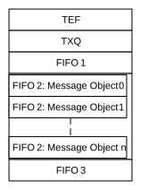

The message objects of the TEF, TXQ and transmit/receive FIFOs are located in RAM (see Figure 38-6). The application must configure the number of message objects in a FIFO between Message Object 0 and Message Object 31. Additionally, the application must configure the payload size of the message objects in each FIFO. This configuration determines where message objects are located in RAM. The RAM allocation can only be configured in Configuration mode.
To optimize RAM usage, the application needs to start configuring the RAM with the TEF, followed by the TXQ, and continue with FIFO 1, FIFO 2 and FIFO 3.
